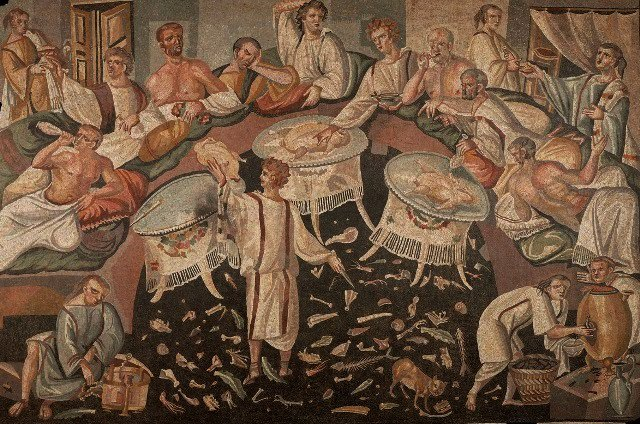

La historia de las recetas
Comer siempre fue y será una necesidad básica pues es algo que literalmente nos puede matar, así que no sería una locura decir que las primeras recetas fueron transmitidas de boca en boca cuando no eran venenosas ni significaban un gran sacrificio, como simplemente poner al fuego la carne.
Las primeras recetas
El historiador francés Jean Bottéro, durante una investigación de la Universidad de Yale, descubrió en 1990 un conjunto de 25 recetas inscritas en tablillas cuneiformes, que ahora se conservan en la colección babilónica del Yale Peabody Museum. Estas datan aproximadamente del 1750 a.C. y evidencian que Mesopotamia no solo fue la cuna de la civilización, sino también del arte de preparar una buena comida.
El buen comer
Fueron los habitantes de Mesopotamia los primeros en darle un valor cultural a la comida, al materializar su necesidad de documentar las recetas para que sus descendientes pudieran reproducirlas de manera fiel. Y fue entonces cuando, en efecto, nació la gastronomía, la cual a día de hoy constituye una deliciosa "herramienta" para conocer nuestro pasado.
Su evolución
Las recetas culinarias anteriores al siglo XX poseían más una estructura narrativa que permitía cierta creación literaria paralela. En las primeras décadas del siglo XX apareció una estructura separada de ingredientes/procesos en la descripción de las recetas culinarias.